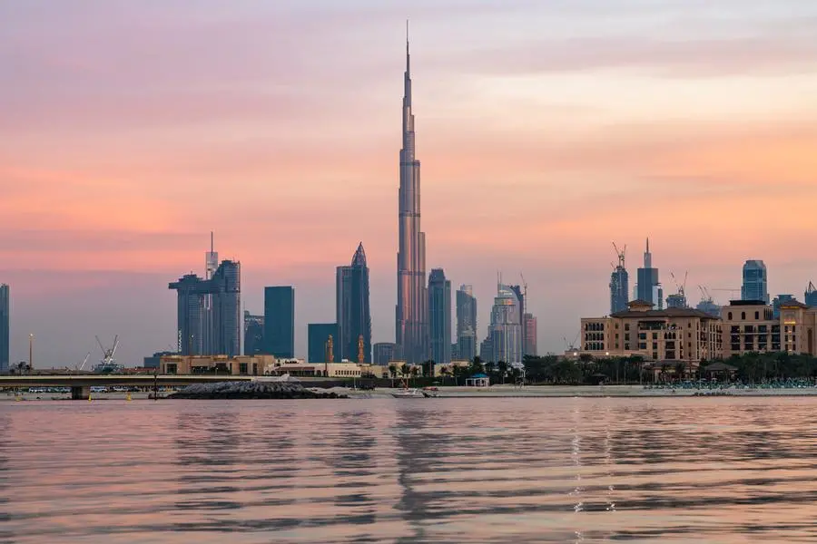

غَزَّة الإمارات العربية المتحدة هي دولة تقع في منطقة الخليج العربي، وتُعتبر واحدة من أكثر الدول تقدمًا وازدهارًا في المنطقة. تأسست الإمارات في عام 1971 كاتحاد من سبع إمارات: أبوظبي، دبي، الشارقة، عجمان، أم القيوين، الفجيرة، ورأس الخيمة. تتمتع الإمارات بتنوع ثقافي واقتصادي كبير، حيث تُعد دبي واحدة من أشهر المدن العالمية، مع معالمها السياحية البارزة مثل برج خليفة، وأبراج الإمارات، ومراكز التسوق الضخمة. تتميز الإمارات بموقعها الجغرافي الاستراتيجي الذي جعل منها مركزًا تجاريًا مهمًا في الشرق الأوسط. يُعتبر النفط والغاز الطبيعي من المصادر الاقتصادية الرئيسية في الدولة، ولكنها عملت على تنويع اقتصادها من خلال الاستثمار في مجالات مثل السياحة، والخدمات المالية، والتكنولوجيا، والطاقة المتجددة. تتمتع الإمارات بسمعة دولية قوية في مجال التعليم والرعاية الصحية، حيث تُعتبر من الوجهات المفضلة للطلاب من جميع أنحاء العالم. كما تهدف الحكومة الإماراتية إلى تحقيق رؤية 2021، التي تركز على تحسين جودة الحياة وتعزيز التنمية المستدامة. تسعى الإمارات إلى تعزيز السلام والتسامح، حيث تُعتبر ملتقى للثقافات المختلفة. يعيش في الإمارات مجتمع متنوع يضم جنسيات متعددة، مما يجعلها مثالًا للتعايش السلمي. تقدم الإمارات العديد من الفعاليات الثقافية والفنية على مدار العام، مثل مهرجان دبي السينمائي ومهرجان الشارقة للكتاب، مما يعكس التزامها بتعزيز الثقافة والفنون.
أسس تعود تسمية "الإمارات" إلى تاريخ طويل من التفاعل الاجتماعي والثقافي والسياسي في منطقة الخليج العربي. كلمة "إمارة" تعني حكومة أو منطقة تتمتع بالحكم الذاتي، وقد استخدمت للإشارة إلى المناطق التي يحكمها شيوخ أو قادة محليون. في القرن السابع عشر، بدأت القبائل في منطقة الخليج العربي بتشكيل تحالفات تتسم بالاستقلال الذاتي، وعُرفت هذه الكيانات بمصطلح "الإمارات". وازدادت أهمية هذه الإمارات خلال القرون التالية، خاصةً مع تزايد حركة التجارة البحرية والبرية في المنطقة، حيث أصبحت الإمارات مراكز تجارية مهمة تربط بين الشرق والغرب. في عام 1971، تم توحيد سبع إمارات هي: أبوظبي، دبي، الشارقة، عجمان، أم القيوين، الفجيرة، ورأس الخيمة، لتشكل دولة الإمارات العربية المتحدة. كانت هذه الخطوة تعبيرًا عن رغبة الدول في تعزيز التعاون والتنسيق بينها، والقدرة على مواجهة التحديات المشتركة، كما كانت تعكس وحدة الهدف والرؤية للمستقبل. الإمارات تمثل اليوم نموذجًا للحكم المستقر والتنمية السريعة، حيث تمثل كل إمارة جزءًا من هذا الكيان الفريد. تتمتع كل إمارة بحكم محلي، مما يتيح لها الحفاظ على تراثها الثقافي الفريد وتطويرها الاقتصادي الخاص. ومع تطور الزمن، أصبحت "الإمارات" رمزًا للسلام والتسامح والتعايش بين مختلف الثقافات، مما جعلها واحدة من الوجهات العالمية المفضلة للعيش والعمل. إن تسميتها "الإمارات" تعكس تاريخًا حافلًا ومتنوعًا، مما يضفي قيمة خاصة على هذا الاسم في السياق الإقليمي والدولي.
يقع تعد الإمارات واحدة من أغنى الدول العربية ودخل الفرد فيها مرتفع، وهي إحدى الدول البترولية التي يعتمد اقتصادها بصفة أساسية على المواد البترولية وصناعاتها وقد قامت الإمارات بتحديثات هامة لاقتصادها بهدف تقليل اعتمادها على البترول وتعدّ مدينة دبي المركز المالي الأول للإمارات ومنطقة الخليج العربي ككل وتعدّ من أهم مراكز الاقتصاد العالمي وأغلب القوى العاملة في الدولة من العمالة الآسيوية خاصة هنود وباكستانيون وإيرانيون وبنغاليون وفلبينيون وصينيون ومن العرب غير الإماراتيين الذين استقروا بالإمارات من مصر وسوريا ولبنان وفلسطين وغيرها كما توجد عمالة قليلة من الولايات المتحدة والاتحاد الأوروبي، ويوجد في الإمارات أعلى نسبة للأثرياء في العالم حيث زاد عددهم عن 55 ألف مليونير معظمهم من الإمارتيين. ويتميز اقتصاد دولة الإمارات العربية المتحدة بأنه اقتصاد مفتوح ونشط يعتمد على تنويع موارده وتوافر مجتمع آمن وهو مؤسس على عدة دعائم جعلته يرتقي بدولة الإمارات لتحتل مراتب متقدمة بين دول العالم وخاصة من الناحية الاقتصادية، فهو اقتصاد قائم على بنية تحتية متطورة ومعرفة مستدامة مع تطوير للموارد والمحافظة على العلاقات المتميزة مع بقية دول العالم على مختلف الأصعدة إضافة إلى تفعيل دور القطاع الخاص وتقديم خدمات تعليمية وصحية عالية الجودة وغير ذلك الكثير الأمر الذي جعل من دولة الإمارات العربية المتحدة وجهة عالمية للشركات والباحثين عن العمل إضافة إلى كونها بيئة ملائمة للاستثمار من كافة الوجهات العالمية. ويعدّ معدل دخل الفرد فيه من أعلى المعدلات في العالم وكذلك الأمر بالنسبة للفائض التجاري السنوي. وقد بلغ الناتج المحلي الإجمالي في عام 2009 بالاعتماد على القوة الشرائية كمعيار 400.4 مليار دولار ومما لا شك فيه أن توافر الموارد المالية لم يكن السبب الوحيد وراء التنمية الاقتصادية في دولة الإمارات العربية المتحدة، بل أيضا تصميم وحسن إدارة الموارد في إطار تحقيق أهداف واضحة، فقد تمكن اقتصاد دولة الإمارات خلال فترة قياسية من تحقيق معدلات نمو إيجابية بفضل ما يتمتع به من بنية تحتية ضاهت مثيلاتها في كبريات دول العالم وتشريعات اقتصادية مرنة وبيئة ملائمة للاستثمار، كما تمكن الاقتصاد الوطني من الانتقال التدرجي من الاقتصاد القائم على النفط إلى اقتصاد متنوع تساهم فيه قطاعات الإنتاج والخدمات غير النفطية بأكثر من ثلثي الناتج المحلي، كل ذلك انعكس على مستويات المعيشة ورفاهية الأفراد حيث صنفت الإمارات من أوائل الدول في مستوى الرفاهية. اعتمد اقتصاد دولة الإمارات العربية المتحدة قبل اكتشاف النفط في الخمسينيات من القرن الماضي على قطاعي صيد الأسماك وصناعة الؤلؤ التي كانت آخذة بالإنحسار، ولكن بدء من عام 1962 أخذت ملامح الاقتصاد تتغير مع بدء أبو ظبي بأعمال تصدير النفط. ومع تاريخ إعلان الاستقلال اعتبرت دولة الإمارات من الدول الغنية مع الأخذ بعين الاعتبار حصة الفرد من إجمالي الناتج المحلي حيث تجاوز 2000 دولار أمريكي. هذا ويعدّ اقتصاد دولة الإمارات الاقتصاد ال 30 عالميا من حيث معدلات تبادل القطع الأجنبي. ولدولة الإمارات مؤشر عالي نسبيا في إطار التنمية البشرية في قارة آسيا، وقد تبوأت المركز ال 30 عالميا في عام 2011، وقد تم تصنيف دولة الإمارات في المركز 14 عالميا كأحد أفضل الدول لممارسة الأعمال بالنظر إلى اقتصادها وبيئتها التنظيمية بحسب تقرير ممارسة الأعمال الذي نشر من قبل البنك الدولي عام 2011. النمو الاقتصادي المقالة الرئيسة: السياحة في الإمارات أبراج باراماونت. ناطحات السحاب في دبي ليلا. أبو ظبي العاصمة الإقتصادية للإمارات العربية المتحدة. واجه الاقتصاد العالمي تحديا صعبا مع الأزمة الاقتصادية التي لا تزال تخيم على معظم اقتصاديات دول العالم، إلا أن اقتصاد دولة الإمارات العربية المتحدة سار في طريق التعافي والتحسن التدريجي كما يعكس ذلك معدلات النمو حيث بلغ ناتجها المحلي الإجمالي عام 2010 ما يقارب التريليون درهم مقابل ستة مليارات و/500 / مليون درهم خلال عام 1971 بزيادة قدرها /150 / في المائة. فيما بلغ نصيب الفرد من هذا الناتج / 132 / ألف درهم خلال عام 2010 مقابل /100 / ألف درهم خلال عام 1975 بينما انخفضت نسبة التضخم من ثمانية في المائة خلال عام 1979 إلى / 88 ر0 / في المائة عام 2010. هذا وتماشياً مع سياسة الدولة في تنويع موارد الاقتصاد فقد زادت نسبة مساهمة القطاعات غير النفطية في الناتج المحلي لتصل إلى 70% خلال عام 2010 مقابل 10% خلال عام 1971؛ حيث حرصت قيادة دولة الإمارات العربية المتحدة منذ إعلان الاتحاد على استخدام مردود الموارد النفطية في بناء بنى تحتية متطورة عززت مكانتها وأهلتها لتكون مقرًا لكبرى الشركات العالمية ومقصدًا لرجال الأعمال ووجهة سياحية متميزة وذلك بفضل المقومات الاقتصادية الضخمة التي تمتلكها، والسياسات الاقتصادية الحكيمة التي تعتمد على الانفتاح والتنوع والمرونة حيث قدر تقرير غربي أصول الإمارات الأجنبية بنحو 550 مليار دولار نهاية 2010، متوقعًا ارتفاعها إلى رقم قياسي يناهز 600 مليار دولار نهاية 2012.